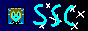
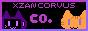
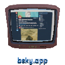
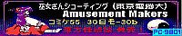
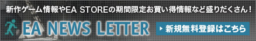

Hello!!!
Welcome to my website!!! You can call me Silver Shorthair! I'm an on-and-off 3D artist, fan of various old things, and real catgirl not made of paper. But, you can learn more on my about me.
My friends!
My bunny friend, who I love a whole lot!!!!!!!!!! site is really awesome and cute so you should check it out!!!!!!My friend Mia, who first got me interested in web development. According to her, her site is outdated, so tread carefully.

My friend Skysupercharged, who's site allegedly has secrets and OC lore. If not, I'm sure that they'll hit the net soon.
My friend Xzan, who is an orange cat obsessed with fighting games. She talks about how she hates Guilty Gear Strive on her site.I only have three social medias that are really worth checking out, you can access them by clicking the icons below!

That's all for the home page, I hope you enjoy the site! If you do, please sign my guestbook!


")



